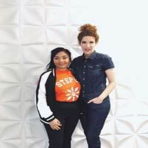
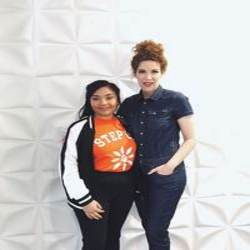
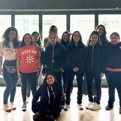
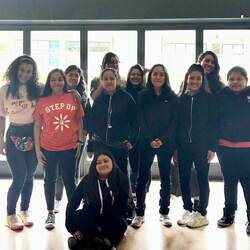
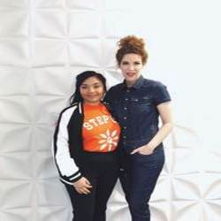
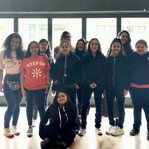

Viviana Hurtado
Ever since I was a little girl, the entertainment industry has always caught my eye. I loved the idea of storytelling, whether it be through a song, dance, film or poem, it’s fascinating to see how people choose to execute their ideas in very creative ways. As I grew older, my mom would ask what I wanted to be when I grew up and I would always tell her, “I want to be part of the entertainment industry.” As a low-income, Mexican woman, to my mom, my dream was just that, a dream. She would then ask me “But what’s your backup plan, just in case that doesn’t work out?” I didn’t have a backup plan. It wasn’t until I received many weird looks from my family members about my aspirations that I started to doubt myself and decided to look for something else.
In high school, I took an AP psychology class that ended up catching my eye and I thought to myself maybe I should become a Psychologist. At the time, I was struggling with many mental health issues myself and became extremely passionate about spreading awareness. From that point on, I was set on becoming a psychologist in the future, helping people deal with their own issues as well. I applied to colleges with the intent of majoring in psych and got accepted. I got to the University of California, Riverside prepared to be in school for at least 12 years to graduate with a PhD in psychology. My first quarter, I took a psych class that was three hours long, I would always fall asleep for the first two hours and wouldn’t start to actually pay attention until the last hour. In my second quarter, I took an 8:00 am psych class and was half asleep for the first half of the class. In my last quarter, I took a statistical psych class and I honestly didn’t enjoy it, I paid attention but never enjoyed it. It wasn’t until the last two weeks of the year that I came to the realization that Psychology was just not for me. I made an appointment with my advisor and decided to change my major to business.
The greatest skill that I have acquired is constantly stepping out of my comfort zone. As a little girl, I was very timid and did not like the idea of talking to new people or interacting with people I did not know. As a result, I grew up being afraid to talk to people to the point where I was actually hurting myself emotionally. When I got to high school, I realized that I had to somehow come out of this shell that I have been in for so long. I literally told myself, “Viviana, you can’t be timid in high school. You’re going to graduate and go to college and you can’t be like this. I don’t know what you’re going to do but you’re going to do whatever you can.” As soon as I said that to myself, I decided to be more involved in school. I joined clubs such as the 2018 Committee, the National Honor Society, Step Up and Cross Country, all of which I would not have been able to do if it weren’t for the reflection that I had. I began participating more in class and taking on leadership roles in every project. I put myself in the most uncomfortable situations every chance that I got both in and outside of school. By the second semester of sophomore year, I had become so accustomed to putting myself in uncomfortable situations, that whenever I found myself in one, it didn’t faze me and I would just fake being confident until I made myself believe I was. I began voicing my opinions and I wasn’t afraid to be myself. I became more and more confident every day. As a result of my newfound confidence, I challenged myself to take on leadership roles in the National Honor Society. As College Chair and President of the National Honor Society, I was required to constantly get out of my comfort zone and be more vocal. By constantly stepping out of my comfort zone not only do I feel comfortable expressing myself, I help others do the same.
Joining the esteemed National Honor Society (NHS) during my sophomore year provided me with valuable leadership experience. Last year I served as the College Chair Person and had a leadership role in the club. As College Chair, it was my responsibility to inform members of college opportunities around our community and to work with the NHS advisor on arranging college field trips for our members. During our weekly officer meetings, I helped decide what kind of community service opportunities we were going to provide our members and participate in. I was able to positively influence other NHS members to be informed about college and get involved in our community service.
One of our community services projects is partnering with our local middle school to provide tutoring to struggling students. Being able to provide our members and our community with opportunities such as tutoring makes me feel happy that I am able to help someone with something that they probably would not have been able to get at home. When I help a middle school student with homework during tutoring and they come back to me and tell me that they did well on a test, I feel accomplished. Not only does this encourage me to keep helping, it also encourages the middle school student to continue reaching out for help and do well in school.
This year I’m currently serving as the president and have a leadership role in the club. As president, it is my responsibility to preside at the meetings of the chapter, and serve as the official representative of the chapter at school and community functions. It is also my responsibility to make sure that all my other officers are doing their jobs and that everything runs smoothly. I set a good example by showing an enthusiasm for scholarship, a desire for service, optimism, and a character that shows courage, loyalty, diligence, honesty, and gratitude.
An educational barrier I’ve faced would be living in an underserved community. Living in East Los Angeles is very different than elite Los Angeles neighborhoods where residents have numerous opportunities. For this reason, many people in my community stop going to school to help out their families financially. Some people become depressed, turn to alcohol or drugs, or even join gangs because they feel alone. As a result, I can hear gunshots, police sirens and helicopter searches on a daily basis as I am trying to do my homework at 8:30 p.m. Having to concentrate on my academics as I watch a man walking around with a loaded gun going off right in front of me is both terrifying and distracting. Every night when I hear the gunshots and sirens, I stop working on my homework, close my blinds, turn off my lights and lock my door to feel safe. At this point, my anxiety begins to erupt and I wait twenty minutes for my body to stop shaking to continue my studies.
However, as sad as this sounds, this is what motivates me to try harder and be more active in school. I joined the National Honor Society at my school to encourage the development of character in the students at my school in hopes for a safer and brighter future in my community. It motivates me to do well in all of my classes and do whatever I can to go to college and obtain a career so that I can move my family and I to a better place, one where I will feel safe. This is the reason I stay up until 4:00 a.m. doing my homework, taking advantage of my teachers’ tutoring hours, and ensuring my grades are on point. Going to a UC will help me break this educational barrier because I will have a degree, obtain a career that I love.
Having to deal with mental health issues is the most significant challenge I’ve had to face. For as long as I can remember, I have always been this timid girl whose self-esteem and confidence was always shot down by one of my older sisters. I became afraid to talk to people or to ask for help when I needed it. Therefore, as I grew up and when life was frustrating, instead of talking to other people about it, I just bottled my emotions up inside. Furthermore, when I got to high school, especially towards the end of first semester of sophomore year, I began to have mini anxiety attacks, I felt depressed, and my grades began dropping. One day I decided that I didn’t want to live like that anymore so I joined this new program at school called Step Up which encourages young girls to reach their full potential and I also began reaching out for help from my school counselor. As a result I began going to therapy sessions and continuously going to Step Up meetings, making sure that I was taking care of myself emotionally. However, once I got to my junior year, I became so busy with school that I stopped going to my therapy sessions and stopped taking care of myself. My anxiety and depression had gotten worse to the point where I would pray every night that I would not wake up the next morning. On the verge of giving up, Step Up provided me with an amazing opportunity to meet someone who has inspired me endlessly since I was little, Selena Gomez. The day that I met Selena was the day that I regained hope that things would get better and that I wanted to live to change someone’s life the way Selena did mine. I pushed myself even harder in school, attending my teachers’ tutoring hours in hopes that my grades would rise and I also made sure that my number one priority was my mental health by letting loose once in awhile.
In high school, I joined an organization for high school girls in under-resourced communities that provides mentorship and resources for girls to explore different fields in the workforce. It was through that mentorship program that I was able to meet people who were apart of the entertainment industry and get to explore different occupations in the industry. I met one of my mentors who was also the External Relations Manager of Step Up at the time and found out that she was also a Talent Manager. She explained to me what her job requires of her and I felt like Talent Management would be such a great fit for me. For this reason, I felt like business was the best fit for the type of career I wanted. People tend to make decisions based on what other people tell them to do. I’ve come to the realization that at the end of the day, we’re the ones who are going to have to live with ourselves, so we have to do what’s best for us. If we don’t know what that is, we shouldn’t look to others to tell us what that is, we need to figure that out for ourselves.
In high school, I joined an organization for high school girls in under-resourced communities that provides mentorship and resources for girls to explore different fields in the workforce. It was through that mentorship program that I was able to meet people who were apart of the entertainment industry and get to explore different occupations in the industry. I met one of my mentors who was also the External Relations Manager of Step Up at the time and found out that she was also a Talent Manager. She explained to me what her job requires of her and I felt like Talent Management would be such a great fit for me. For this reason, I felt like business was the best fit for the type of career I wanted.
People tend to make decisions based on what other people tell them to do. I’ve come to the realization that at the end of the day, we’re the ones who are going to have to live with ourselves, so we have to do what’s best for us. If we don’t know what that is, we shouldn’t look to others to tell us what that is, we need to figure that out for ourselves.
Experience
Assistant Intern
• Communicated well with manager, manager assistant, clients, and other interns
• Directed and answered phone calls/emails
• Inventory
• Covered Scripts
• Maintained Contact Lists
President
•Preside at the meetings of the chapter
•Serve as the official representative of the chapter at school and community functions
•Arrange community service activities
•Create a schedule
Ambassador
•Communicate well with my Step Up facilitator as well as the Step Up manager
•Accommodate the Step Up Sophomore facilitator at all their weekly sessions
•Act as guide and mentor for the Sophomore girls as they make their transition as sophomores to juniors.
Education
UC Riverside
Portfolio
 

 


